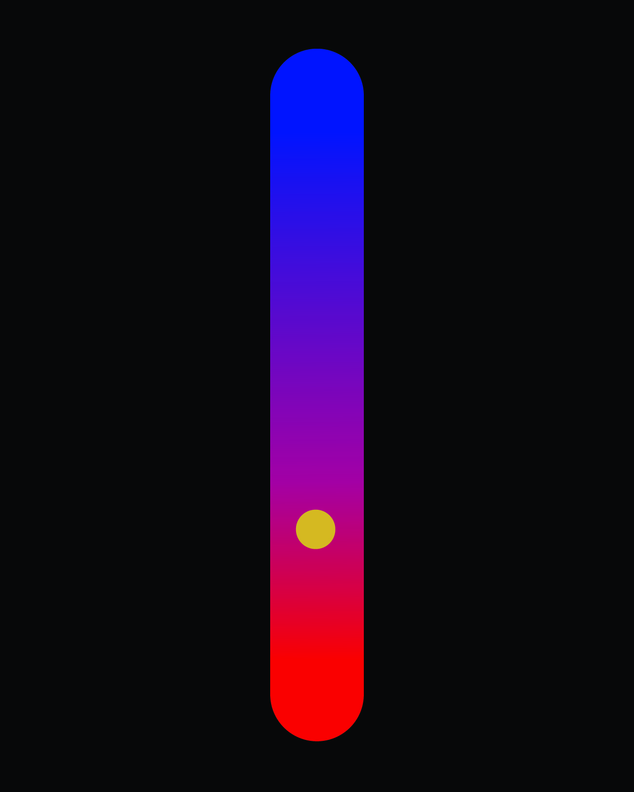
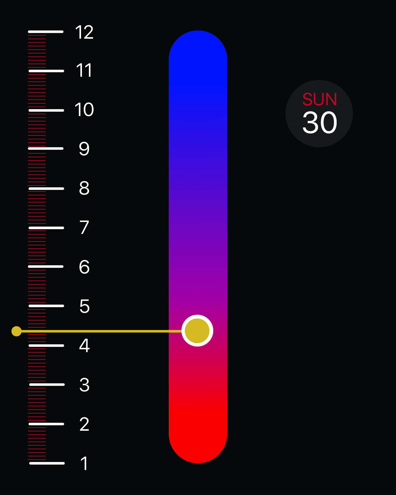
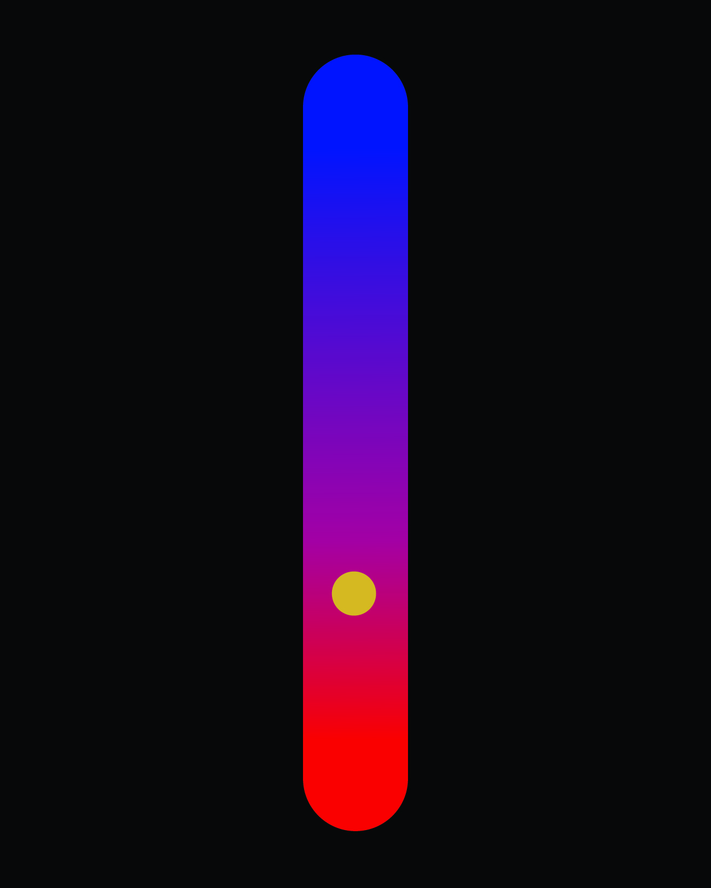
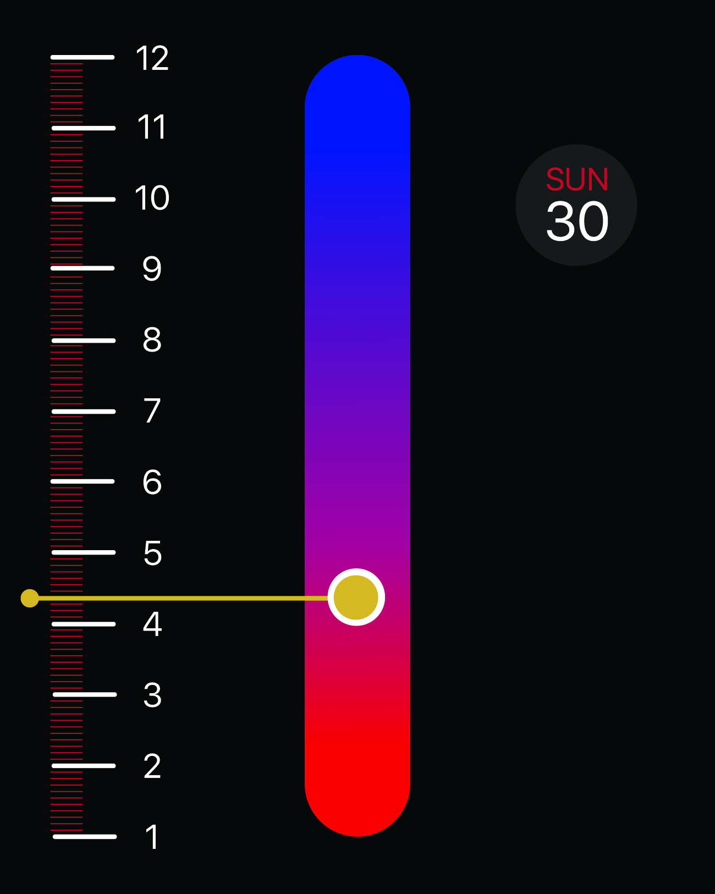

Domain
Data visualization
Theoretical Physics
Kinetic Installation/Interface
Story: Self Questioning About Time
My story begins with a question I have when I was a child...
What is time?
I have this question because it seems I know time inherently. All my understanding is based on what I was told in school. What my parents told me to do. I keep questioning myself to try to jump out of the ordinary perception of time and find out what it really means to me.
Understanding of time
A unit system
I used to think time is a standard unit system. It has second, minute, hour, day..etc. It has it’s own rule of unit. It never stop, can’t go back and only have one direction. And it tells me when to study, and when to go to sleep. In a word, I used to think time is a standard artificial unit to manage our actions. Then I just wonder if time is only the unit as meters or kilogram. Why can’t I define it in my own unit? Just like I have to exchange everything measure in cm to inch in US? So that I can do whatever I want, I can stay up late for gaming because it is not time to go to bed in my standard of time. Then I start to think if time is just a unit system. If we take away that system. It’s that means time doesn’t exist anymore? But I’m still aging and will die eventually even though without that system. I still feel confused about the answer until I watched a documentary about the theory of relativity called “NOVA The Fabric of Cosmos: The illusion of time”
Relative Time-Space
This is really a mind blowing documentary for me to introduce how Einstein understand the time. In the documentary, Einstein’s theory of relativity suggested that “time and space can be no longer considered as separate, they are fused together and called the ‘Time-Space’”. In this way, the relation of time and space is just like the x-axis and y-axis. That means when you move with a certain velocity, you are considered moving in time and space at the same time. When you sit on a chair or being stationary. You are still moving in the time axis. In time space, when you moving both in time and space, your time passage will be different from the stationary status, because the motion is shared by space axis. The result is that the motion through space is affect the passage of time. The time running on the moving object is slower. This astonishing predict of time is called time dilation. And it is already proved by the experiment to take an atomic clock on the jet plane and compare the time with the other atomic clock on the ground. The scientists detective only a few hundred billions of a second difference. The difference is such subtle because the velocity and the distance is not large enough to see a significant change. And that’s also why our life isn’t affected by time dilation on earth.

The significant differences made by the relative time-space
Individual Time-space
Changeable Time Passage
Past,present and future
People don't share the same time passage anymore. Instead, each individual should have their own time passage due to the different motion

Since the time and space are no longer considered as seperat from each other. The motion is shared both on the dimension of time and space. Time can be "squeezed" by the high speed motion.

This is the most abstract concept of the relative time-space. Since the time and space is fused together. Then if we consider the space is exist. All period of time should also be considered as existed. Which means past, present and future are all exist. This is contradict to our traditional understanding that past has gone and future haven't existed.

This artwork illustrate the concept of existance of all time period. As you can see the sesons on the trees with just a glance, that illustrate a certain concept of relative time-space
The Reason
From this story of a self conducted research. I think I just found my passion on the analysis of time. Within this exploration, I’m aware that the time can be understanded in a quiet unusual way. Instead of just be limited on the time keeper in the story. I would like to keep researching about visualize time in variety of way. To create the work that illustrate the connection of time and space. In order to show how this connection differentiate and impact our traditional understanding of time.
ideations
1. Field Force Visualization
The field force means the a vector field that described a non-contact force acting on a particle at various positions in space. It is a very basic physics concept. This idea originate from the experiment I did in the middle school. I gathered a bunch of iron powder and distribute it disorderly around a powerful electric magnet. Then the power will form a pattern of lines that indicate the magnetic line of force. I was kind of astonish at that time. With this simple experiment. I can perceive an existed thing that I can’t perceive before. In fact, there are so many force field we can’t perceive visually. But they are existed and affect us anytime any where. From this I want to ask if what we visually see defined what is the reality? The answer is definitely negative. So what can really define the term “reality”? It must be something beyond our perception. Force field is one of example. And it should be a good start.
2. 4D photograph
We take photos to catch several important moment. This important moment always is meaningful for us. So that this simple work in 2D therefore have another dimension. Our emotion. It is more than just a graph. It is a memory, a story, or a record of a certain feeling that we may never have in the rest of our life. Time is considered as the 4th dimension in physics. And I kind of finding there is some relationship between it and the photography. I consider photography is a snapshot on the dimension of time. It a certain spot on the time. It seems like time is “frozen” as we take the photography. What will it look like if we make the time also exist in the stationary photography? What will it looks like? Can it affect our emotion on the photography?
3. Theoretical physics visual posters
The field force means the a vector field that described a non-contact force acting on a particle at various positions in space. It is a very basic physics concept. This idea originate from the experiment I did in the middle school. I gathered a bunch of iron powder and distribute it disorderly around a powerful electric magnet. Then the power will form a pattern of lines that indicate the magnetic line of force. I was kind of astonish at that time. With this simple experiment. I can perceive an existed thing that I can’t perceive before. In fact, there are so many force field we can’t perceive visually. But they are existed and affect us anytime any where. From this I want to ask if what we visually see defined what is the reality? The answer is definitely negative. So what can really define the term “reality”? It must be something beyond our perception. Force field is one of example. And it should be a good start.
4. Time keeper redesign
The theory of relativity is abstract to understand. How motion affect the time is really different from people’s traditional understanding of time. Find a good illustration of the relati onship between time-space and motion.
5. Human time perception experiment
Some times I find time goes so slow, while sometimes I feel time going so fast(while I was gaming). The watch nowadays are so good about precisely report time. They can’t be wrong about calculation. But why we still “feel” time so differently? Although we have watch, we still percept time by ourselves passively. I want to visualize different people’s perception of time according to different actions. The participants will do the different actions in a same duration. Then I will let them press a button to describe how long they thing the duration is. The longer they pressed, the longer duration they think they have. I’m willing to see the difference.
2D
In this 2D assignment, I tried to convey the concept of special theory of relativity in to pure visual content. In order to explore how such a abstract physics concept can be visualized and what visual element is the most effective.
Process
In order to fully illustrated the main concept of the special theory of relativity. I decide to break the theory into several core concept. Because I think these are that elements that make these theory unique. And they are pretty different understanding from our previous ordinary understanding of time. On the other hands, the theory itself conveys a pretty broad and abstract way to understand time. Break it into part will be helpful for me to narrow down the scope to make accurate illustration. Finally, These are the core concept I break from the theory.
- Time and space is fused together
- Our reality us consisted by the slices of space on time perspective
- Motion affect the angle while we "slicing" the time space
- Time travel is possible once we amplify the effect of the angle created by motion
I'm going to create 4 posters that illustrate each core concept separately. It will be a series posters. And they will be placed in this certain order. Since it is a expansion of a idea of time space fused together and finally to a amplified interesting idea of time travel.


3D
For 3D, I want to make a 3d installation of a relativity concept. Since 3d is a physical dimension. Which means the audiences are able to see to touch and feeling. So I think it is important to make the topic attractive enough to make people want to stop to look and understand. I think the time dilation phenomenon in special theory of relativity is a very good thing to show on a installation. This phenomenon is about the time passage on a moving object is slower than the object being stationary. Since it is rarely observable in our daily life. Besides, I don't want this installation just be another theory from physics book. I want ot mainly focus on showing what is the effect. And ask question for the audiences. How this phenomenon makes you think of time. Does it change your value of understanding time?
Process
The process behind the time dilation is pretty complex. I don't want to focus too much on it. I just want to show the result of the time dilation. In this way, I start to think about how to conveys this phenomenon. I think The generally idea of this phenomenon is the comparision between the moving object and the non moving object. And the reason why we rarely feel or see the phenomenon of time dilation because it is so subtle on earth that we can't notice the change on time passage caused by motion. In this way, I just confirm my decision for this project. Make a comparision and amlify the phenomenon of time dilation.
Comparision
I make a different color dot in blue and red. The blue one represent the non moving object. While the red one represents the moving one. Besides the motion status, I also want to show the difference of time passage for both of them. In order to make the audiences see the difference. So I add two leds and make them blink repetitively to indicate the unit time passage on the two dots. Of course led's color matches with the dots color. The purpose of doing is because that's the repetitive movement represent the very single movement of time passage. The audiences are supposed to see on led blink much slower while the dot it represents are moving. Besides the unit, the other indicator I made is a lcd that indicates a duration by the arrow icon. I would like use it to show how a unit change finally affect the duration. Once the unit of time passage getting slower, then the duration is getting slower to. And I think the duration indicator can amplify the slowing down result of time passage caused by motion. Finally in order to indicate the red dot is moving. I stick it on a fan of motor. So when the motor is moving. That represent the red dot is moving. Then create a clear comparison with the blue dot which stay in stationary.
Final
Here is the final output. The showcase can be broke into two parts. The first part shows the time passage between blue dot and red dot are the same at first. Then when the motor start to moving the red dot. The time passage on red dot start to slow down. I amplify it twice slower as the blue's. So that you can see the dramatic different on duration indicator.
4D: Watch face for space traveller
For 4D, I design a watch face for the space traveller in the near future. The space travel in the future will be performed in a very high velocity. In this way, the motion affected time passage phenomenon needs to considerate. The traveller need to be aware of their time passage's difference. So I think it can be solve by a redesigned watch face.
Process
First, I try to decide the features I want to achieve on this redesigned watch face. The thing that makes it different from the traditional watch face is the special theory of relativity. So give the users a sense of time in the understanding from the special relativity perspective is important. I extract the concept of time-space in special relativity to be represented on the watch face. Since the time-space is the basic frame work for all the understanding and phenomenon in the theory. The first feature is represent relationship of time-space on the watch face. On the other aspect, I'm considering that it is still a watch face. It's main function is till a timekeeper. It should remain some classic feature of a timekeeper. Then this leads to the secondary feature, the ability to indicates time and date. Finally, the third feature is the most important feature that make this redesigned watch face different from the original one. The ability to indicate the difference of time passage. It is able to indicate the time passage on the reference frame of where the user departure. So the time passage on this redesigned watch face will actually slowing down to make the user keep experiencing the same time-space reference as his/her departure location. So that they will know the difference. Here are the list of features:
1. Convey the concept of time-space
2. Indicate date and time
3. Shows the time passage affected by the motion
Design the watch face
The concept of time-space in special relativity indicates a special relation between our past, present and future. Since time is exist along with the space. So once the space exist, that also means all the period on time also should exist. On the other word, our past is not gone, our future is already exist. Past and future are both exist at the same time. Our present just like a moving dot that moving on the time from past to future. So the first visual design for the watch face is the "timeline" and indicator. To remain the classic time keeping feature. I add the time scale at the side to let the users know the time.
 



The another important feature is to indicate the event on this redesigned watch face. Since event can be considered as a duration of actions. They are also exist in the future So I make them indicated as several small bar placed ahead of our present. Because they are "awaiting" user step on. And the length of these event bars represent their duration. The advantage of this is that the user can have a sense of the events' duration in a glance.

The last feature is the time dilation indicators. They are able to show the users if time dilation is happening. The white bar under the timeline will blink in red while the time dilation is hapening. The yellow circle with letter c inside is the meter for speed of light. It can indicate how many percentage of light speed is achieved by the travellers.
Here is the live demo of how this watch work.
Human time perception experiment interface
From my previous project 1d to 4d. I was pretty much focus on the theoretical physics. Try to illustrate the very abstract concept from special relativity. Since 5d is about human interaction. I would like to change the lens. Try to understand from human's side. I start an idea by questioning if human can perceive time passage. And the answer is yes. We have certain ability to perceive time. We can estimate how long it will take to travel to our destination. We can watch Youtube for three hour but only "feel" an hour pass. I want to use this illusion of human time perception to analog the concept of special relativity. And there is a very interesting saying about relativity that has the same idea.
"When you are courting a nice girl an hour seems like a second. When you sit on a red-hot cinder a second seems like an hour. That's relativity."
Process
So the interesting phenomenon like this just like the time dilation phenomenon in special relativity. The time passage we perceive while we are doing the things we like to do, staying with the person we like always seems past faster than we think. On the contrary, the time passage seems slow when we are feeling boring, anxiety, nervous any negative emotion like these. It sounds like we are in the different reference while we are in the different emotion. So that the time passage seems different accordingly. I want to visualize human's time perceive ability by an interaction interface. In order to analysis what can affect human's time perception ability. Then the big question is raising.
How do we transfer time perception to computer?
Then I came out an idea that inspired by the muscle memory of gamers while they play shooting game. In a certain type of shooting game. The player need to press space key to charge their weapon. The duration they pressed the space button determined how fast their bullet will be shot. To hit the target more accurate, they have a kind of muscle memory while they holding the space key. So that they can hit the target accurately with less time. I think this kind of memory for a duration can be considered as a certain type of time perception. This kind of time perception is detect by human and transfer to computer by holding a certain key for a duration. It is transfer the time duration by interaction with computer with the same duration.

In this type of shooting game, the bullet follow the physics as the real world. It's track will affect by gravity. The player need to shoot by holding a key to control the speed of the bullet to determine how far they can go.
With this inspiration, I finally created this interface for 5d. I make a animation for several balls with different moving balls. And after watch this animation, the participant need hold a button for a while to match the duration of balls movement as they think. So that we can see what kind of movement of balls can make human's perception for the duration accurate or less accurate. Here is the video demo.